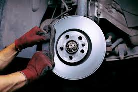
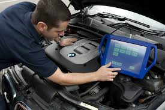

Cambio de aceite
Medir el nivel de aceite de motor ayuda a prevenir fallas y a evitar daños mecánicos que pueden, a corto o mediano plazo, generar inconvenientes en tu auto.
$90.000

Revision de frenos
Incluye la inspección de las pastillas, discos, líquido de frenos, y el sistema hidráulico en busca de desgaste
$125.000

Escáner
Un scanner automotriz es una herramienta que se utiliza para diagnosticar las fallas electrónicas de un auto, específicamente las almacenadas en la computadora del mismo.
$95.000